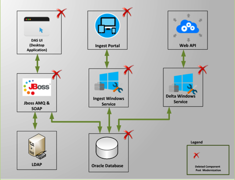
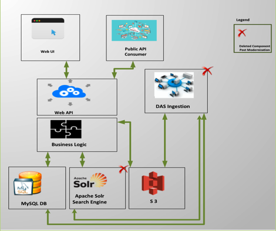
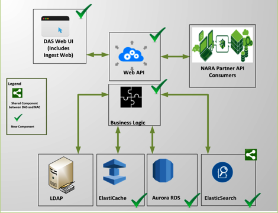
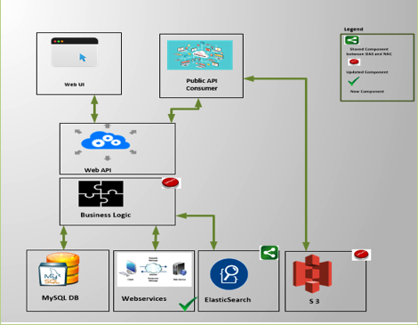
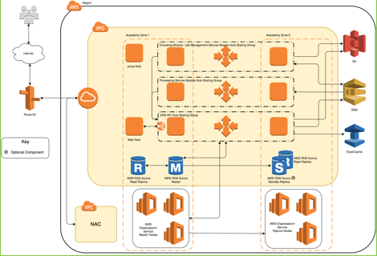
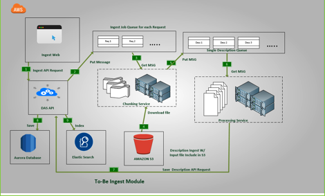
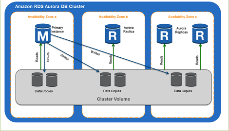
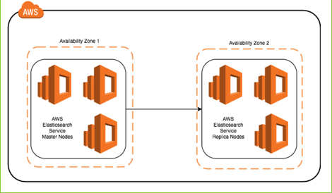

National Archives Catalog (NAC)
And
Description and Authority Services (DAS)
System Architecture Document (SAD)
For the DAS and NAC Modernization
Preliminary Version
Version 1.0
November 15, 2017
Prepared for:
National Archives and Records Administration (NARA)
Catalog Task NAMA-16-G-005, DME 16 Task 005
Prepared by:
1760 Old Meadow Road
McLean, VA 22102
Acknowledgements:
PPC would like to acknowledge the significant technical contributions made by the following staff:
§ Dr. Urmi Majumder
§ John Henson
§ Edwin Piedmont
§ Matthew Mariano
§ Fawad Shaikh
§ Aurora Rischak
Contents
1.2.1 Description and Authority Services Background
1.2.2 National Archives Catalog Background
1.2.3 System Components in Current NAC and DAS Applications
1.2.4 Problems with the Existing Setup in DAS and NAC
1.3 Future Components Overview
1.3.1 DAS System Components: Design, Implementation and Integration.
1.3.2 NAC System Components: Design, Implementation and Integration.
2... High-Level Modernization Architecture
2.1 High-Level Architectural Diagram
3... Supporting Infrastructure
3.1 Amazon Web Services Resources
3.1.4 Identity and Access Management
4.1.2 Infrastructure and Resources
4.1.3 Design Aspects and Technical Considerations
4.2.2 Infrastructure and Resources
4.2.4 Design Aspects and Technical Considerations
4.3.2 Infrastructure and Resources
4.3.4 Design Aspects and Technical Considerations
4.4 Description and Authority Services Application Programming Interface
4.4.1 Infrastructure and Resources
4.4.2 Design Aspects and Technical Considerations
4.5.2 Infrastructure and Resources
4.5.3 Design Aspects and Technical Considerations
4.6.1 Infrastructure and Resources
4.6.3 Design Aspects and Technical Considerations
List of Figures
Figure 1: Existing DAS Components and their Interactions
Figure 2: Existing NAC Components and their Interactions
Figure 3: Future DAS System Components and their Interactions
Figure 4: Future NAC System Components and their Interactions
Figure 5: DAS/NAC Architectural Diagram
Figure 6: Ingest Component Diagram
Figure 7: Amazon RDS Aurora DB Cluster
Figure 8: DAS/NAC Physical Design
List of Tables
Table 1: DAS API Component Interfaces
Table 2: Amazon Aurora PostgreSQL Performance by the Numbers
Table 3: DAS/NAC Components to be Removed During Modernization
Table 4: Proposed AWS Elasticsearch Instances
This document describes the major and minor components of the Description and Authority Services (DAS) and National Archives Catalog (NAC) modernization architecture, their relationships, and the data within the context of the National Archives and Records Administration (NARA) DAS/NAC modernization effort. For purposes of context and illustration, certain low-level elements may be referenced but should not be considered definitive. For low-level implementation details of these components, refer to the DAS/NAC Modernization Software Design Document (SDD).
This is a preliminary document that represents the tentative state of the architecture as agreed upon by Project Performance Corporation (PPC) engineers and NARA systems engineering leadership at the time of writing. Certain sections are left incomplete, and in those cases PPC has provided as much information as possible with the expectation that those topics will be further developed in later releases of this document. Details including auto scaling policies and CloudWatch alarm configuration may not be determined now.
The current DAS and NAC systems are isolated systems that share the same information. Since they are isolated from each other, the information that originates from DAS must be transferred on a regular basis to NAC. The transfer process is lengthy and cumbersome. DAS exports can take many hours to generate and tie up system resources that would otherwise be used to perform DAS-specific operations. NAC ingestion of that data is error-prone, has taken days if not weeks to complete, and relies on third-party proprietary software and libraries. With the growing size of the data and the expected acceleration of that growth, the process can’t continue to support NARA’s mission of providing public access to archival holdings.
The primary purpose of this effort is to develop a design that achieves two major goals: To create a single data store for DAS Description and Authority data, and to consolidate the underlying search technology. The first goal eliminates the weekly data migration activity and reduces the time it takes for a record to become publicly accessible. The second goal greatly improves the search functionality for both DAS and NAC in terms of performance and reliability.
The NARA DAS is an archival repository built by PPC that replaces NARA’s legacy Archival Research Catalog (ARC) system. DAS provides data-entry capabilities to NARA’s staff, and this data is made available to the public via the NAC system. DAS allows NARA’s staff to describe and control archival holdings at appropriate descriptive levels for all media, as well as to create and maintain Authority records that provide access points to the Description data. DAS has about 600 users (as of September 2017) throughout all the NARA facilities. As DAS is responsible for the collection of metadata related to the publicly accessible information about NARA’s holdings, this data must go through a rigorous workflow process that ensures data integrity prior to becoming publicly available. The application ensures this integrity through the implementation of business rules that must be met before Descriptions and Authorities can be published into the approved domain. Additionally, DAS supports a comprehensive role- and group-based security model and offers users sophisticated search capabilities, workflow, record editing and global operations. From an implementation perspective, DAS is a three-tier application, hosted in the Amazon Web Services (AWS) Cloud, with a .NET front-end, Java middle tier and an Oracle data store.
The primary business driver for this modernization effort is for PPC to build a system that can keep up with the ever-increasing volume of archival Descriptions. As of September 2017, almost 19 million Descriptions are stored in DAS as structured Extensible Markup Language (XML), as well as 37 million links to digitized objects, including:
· American Standard Code for Information Interchange (ASCII) text
· Image formats, e.g. JPEG, Tagged Image file (TIF), Graphics Interchange Format (GIF), Portable Network Graphics (PNG), bitmap (BMP)
· Audio/visual formats, e.g., Audio Video Interleave (AVI), MOV, Moving Pictures Export Group (MPEG)-4 (MP4), and Windows Media Video (WMV)
· Microsoft (MS) Office formats such as Excel, PowerPoint, and Word
· Sound formats including MP3 and Waveform Audio File Format (WAV)
· Adobe Portable Document Format (PDF) format
· Hypertext Mark-up Language (HTML) pages
The application must be able to scale (without underlay impacting system performance) to support billions of archival Descriptions that are needed to describe billions of records created by the federal government each year. It also needs to be reliable and consistently available during normal NARA work hours.
NAC, originally called Online Public Access (OPA), is the online public portal to NARA’s records. NAC is key to maintaining NARA’s commitment to open government through public access to high-value records. Public access to government records strengthens democracy by allowing Americans to claim their rights of citizenship, hold their government accountable, and understand their history so that they can participate more effectively in their government. NARA has stated “We will reach beyond the traditional role of making records available for others to discover and will make access happen by providing flexible tools and accessible resources that promote public participation.” NAC is the end-product of this goal to make all publicly available records available to the public in digital form to ensure that anyone can explore, discover, and learn from NARA holdings.
The catalog currently provides access to records created or received by organizations of the executive, legislative and judicial branches of the Federal Government. Some examples of frequently requested records available to public through NAC include documents about the Trans-Mississippi West (1804-1912), Holocaust-Era assets, records about the US House of Representatives, 1789-1989 and US Senate, 1789-1989. Most of the records are textual, coming from DAS, but NAC also provides access to other forms of media such as microfilm, maps and charts, architectural and engineering plans, aerial photographs, motion picture reels, video recordings, sound recordings, computer data sets, still pictures, and others totaling almost 19 million electronic records (as of September 2017) currently not available elsewhere online. Besides content from DAS, NAC searches all Web pages on archives.gov, blogs.archives.org, nara.gov, ofr.gov, presidentialtimeline.org, and many others and presents those pages in the search results along with any catalog records, thus enabling researchers to work more efficiently.
Apart from searching the content via their Website, NAC allows the public to download this content, as well as access the same programmatically via application programming interfaces (APIs). Furthermore, NAC allows citizen archivists to transcribe some of the millions of digitized pages of records, thus improving search relevancy and accessibility to historical federal records. Additionally, researchers and the public alike can tag, translate and comment on records, thus allowing NARA to add contributions from external sources to its own repository. The transformation of NAC into a social catalog enables ongoing contributions and scalability of crowdsourcing to all records within the catalog.
The current DAS application, as shown in Figure 1, has 3 distinct interfaces for interacting with the common Oracle database:
· A desktop based user interface (UI) leveraging the capabilities of the Windows Presentation Foundation (WPF) client platform
· A Web portal for batch ingestion
· A Reprepresentational State Transfer (REST) API interface for partner agencies and other applications at NARA to interact with DAS
Each of the interfaces has its own corresponding application tier. For instance, the desktop UI interacts with the service tier using JBoss Enterprise Service Bus (ESB). Essentially, the Java-based service tier hosts a set of SOAP Web services which, when combined, implement the DAS system methods and expose data. The services are designed to stand alone without reference to the Presentation tier. The Presentation tier communicates with the Service tier by way of the JBoss ESB. The ESB exposes all capabilities offered by the DAS system. The Presentation tier interacts with the ESB by sending and receiving messages on the DAS message queue, implemented as a Java Message Service (JMS)-compliant queue using the open-source Apache ActiveMQ product.
The Web portal for batch ingestion is supported by Windows scheduler services that splits large input files into smaller chunks and processes each Description before saving it in Oracle. On the other hand, for the .NET based Web API interface, the request type and the size of the result set decides whether the response would be generated synchronously or the request would be provide over to a background Windows service that processes the request and posts the result set to the consumer endpoint.

Figure 1: Existing DAS Components and their Interactions
NAC has the following primary components (see Figure 2):
· The Content Processing Service (CPS) module is responsible for receiving new documents from DAS, modifying them as necessary and publishing them to the Search and Access sub-system for eventual dissemination to the public. This module is implemented using the Aspire framework and all the content generated in each step is stored in Amazon Simple Storage Service (S3) buckets.
· The NAC Search Engine consumes output from the Content Processing module (indexing) and responds to requests from the application server (searching). The search engine is implemented in Apache Solr Cloud for distributed indexing and searching support, thus allowing the NAC search engine to be highly scalable and fault-tolerant.
· OPA Storage is the long-term content storage for all publicly available NARA data and is implemented using AWS S3 buckets. It contains digital objects, alternative renditions of Digital Objects (thumbnails, image tiles, and alternative resolutions), sub-documents, tables, and record-structured data.
· The Annotations and Registration Database, implemented in MySQL, contains tags, comments and transcriptions as well as bookkeeping information for all annotations. It also holds information on all registered users, including profile information and encrypted passwords.
· NAC Application Services, hosted on the NAC Application Server, is responsible for handling all end-user requests for search and access, and authorized user requests for creating and deleting annotations.
· Catalog Browser and APIs: This refers to the public Website, written in JavaScript and HTML5, where end-users can search, access and download records. The documents can also be accessed programmatically via search and access APIs.

Figure 2: Existing NAC Components and their Interactions
This section describes the problems with the existing architecture.
DAS was originally designed with an emphasis on implementing a flexible schema. That way, new properties could be easily added to a Description or an Authority type without having to make a cascading set of changes on dependent entities. Consequently, all links, independent of whether they are parent links or Authorities for a Description, are persisted in the same table in the database, along with its position information in the hierarchical XML structure in the Description document. As of September 2017, with 19 million Descriptions, the link table has 251 million records. To prevent degradation of performance of Description persistence and retrievals, we must continuously partition the related tables. With the DAS Ingest module in place since summer of 2015, the size of the link table has tripled. For instance, during the month of May in 2017, 1.5 million Descriptions with 3.7 million Digital Objects were created in DAS. NARA is looking to ingest 6 billion Descriptions and 25 billion Digital Objects by the end of this decade. With the current architecture, that would imply 330 billion records in the link table, and performance of basic saves and gets for a Description entity is bound to suffer.
Besides using Oracle as a data store, the XML DB features of Oracle, including support for XQuery, Structured Query Language (SQL)/XML and Extensible Stylesheet Language Transformation (XSLT), are used to serve keyword- and field-based searches in DAS. Oracle enables special indexing on XML, including Oracle Text indexes, to accelerate such searches. Using text indexes speeds up searches when compared to performing string matches in a character large object (CLOB) column. However, it cannot compete with the performance of a standard B-Tree column index. Additionally, in Oracle 12c, such text indexes were converted into two-level indexes under the feature name “near-real-time indexes.” This allows the database to have a small, fragmented index containing all the recent updates to the table, which fits comfortably in memory without having to modify the large “standard” index. Unfortunately, this technique is not at all suitable for the Description table, with 19 million records as of September 2017 that see numerous updates via global operations or inserts via ingest each day. Moreover, Oracle 12c introduced a new job, DR$BGOptJob, which runs every 2 minutes and moves index data from “in memory” $G table to “on disk” $I table. However, when records are added to $G faster than they are removed, DR$BGOptJob runs continuously, taking away valuable central processing units (CPUs) and memory resources from other database operations, such as complex searches and bulk inserts and updates. To get around this issue, today we manually rebuild the index on the Description table during all maintenance windows. But as the Description table size grows, so does the size of the context index and the time to fully recreate the index. Currently, it takes almost 9 hours to drop and recreate such an index that keeps track of all the metadata fields in a Description XML.
DAS runs on an Oracle 12c database (version 12.1.0.1.0) hosted in the AWS cloud. DAS uses High Storage (HS) 1 8xlarge Elastic Compute (EC2) instances for the database server. Para-virtual (PV) Amazon Machine Images (AMIs) are used with Oracle Enterprise Linux (OEL) 6.7 for the operating system. For the Logical Volume Manager (LVM), DAS uses Oracle Automatic Storage Management (ASM) to maximize the input/output (I/O) performance via disk striping. HS1 8x large instances have 24x2 TeraByte (TB) local Solid-State Drives (SSDs), which are used for Oracle ASM with external redundancy for maximizing the database read/write performance. There is an identical instance established as the standby production database with a Data Guard broker to keep the data synchronized between the primary and secondary databases. The database instances cannot be stopped and restarted because NARA data lives in the associated ephemeral storage. As the instance grows older, the likelihood of disk failures increases. During the summer of 2015, two ASM disks failed in the primary production database. DAS had to be switched over to use the standby database for the primary production database. Then ASM was rebuilt in the old primary database (with normal redundancy using 22 out of the 24 available disks) and converted to be the new standby database. In early 2016, a similar disk failure in the user acceptance testing (UAT) database prevented the scheduling of daily Recovery Manager (RMAN) backups in the instance. Using a RAID 0 configuration with Elastic Block Storage (EBS) Provisioned Input/Output Operations Per Second (PIOPS) volumes with at least 10,000 IOPS, instead of ephemeral storage as the ASM, is possible but cost prohibitive. For instance, with even 10 such volumes, the monthly AWS cost would be around 9,000 U.S. dollars (USD). This does not include the monthly licensing fees that NARA pays to obtain enterprise support from Oracle.
The middle tier in DAS is implemented using JBoss Service-Oriented Architecture Platform (SOA-P) 5.3.1, which lost maintenance support from RedHat on 11/30/2016 and will lose extended life support on 05/31/2018. Hence, the current application must be upgraded to either more recent versions of the products used today, or migrated to a new architecture. The components of SOA-P 5.3.1 that DAS primarily uses include JBoss ESB 4.11.1, jBPM 3.2.14, Drools 5.3.1 and Enterprise Application Platform (EAP) 5.2. The replacement products for JBoss ESB is Fuse 6.2.1, which includes Apache ActiveMQ, Apache Camel, and Apache CXF. For jBPM 3, it is Business Process Management Platform 6.2, which includes Drools 6.3 and jBPM 6.3. EAP 5.2 must be upgraded to EAP 6 to serve as a container for Fuse, business process management software (BPMS) and other Web services that DAS currently has but are not affected by the change. With the modernization effort, however, we intend to move away from a service bus based architecture to a REST API based architecture that can be uniformly consumed by DAS UI as well as other applications at NARA and their partners and only use RedHat BPMS module for implementing DAS workflows.
DAS UI is a desktop application based on WPF, part of Microsoft .NET Framework 4.0. It provides a rich interactive user experience, leveraging the capabilities of the WPF client platform. However, it requires computers to be located within the NARA network to access the DAS System directly over the NARA local area network (LAN). For external computers (e.g., users working from home), users need to first authenticate and gain access to the NARA remote access Citrix server before they can access the DAS system. Additionally, installation of the .NET 4.0 Framework (full version) is required to operate the DAS UI. For each monthly release of DAS, separate builds are created for Citrix and non-Citrix users. However, much coordination is needed with NARA information technology (IT) to install the latest build of DAS UI to the Citrix servers which, in turn, means DAS Citrix users cannot benefit from the new feature releases or defect fixes in DAS as early as the DAS users who have access to NARA desktops.
Furthermore, third party libraries such as DevExpress Windows Presentation Foundation (WPF) Control Libraries have been used in DAS UI to implement most of the UI controls. Besides prohibitive licensing fees, some features cannot be implemented in DAS UI because of its use of DevExpress libraries. One such example is the focus issue in DAS UI. After populating one or more fields in the UI, the Save button is not enabled unless the user clicks somewhere in the UI.
Prior to the deployment of .NET based DAS Ingest module to the production environment in the summer of 2015, bulk ingestion would use the existing ESB/SOA based middle tier. However, because of the index related issues mentioned in section 1.2.4.1, whenever such an import job would kick off in the background, index syncing would utilize enough CPU cycles to noticeably degrade usability of DAS. Additionally, the original bulk ingestion module in DAS was Oracle based and single-threaded and, hence, limited in the number of Descriptions that can be ingested at a time. The .NET Ingest module uses multi-threading to massively parallelize the ingestion process. Additionally, it stores the processed Descriptions in staging tables and only migrates them to the primary tables at nighttime when the CPU load on DAS is minimal, thus bypassing the need for the index to continuously synchronize and burn CPU cycles.
DAS is the system of record at NARA. Hence, every week NAC ingests all new and updated Authorities and Descriptions created in DAS and pushes them to the search engine so that they can be searched and accessed by the public. After ingestion, the Description XML in NAC looks identical to the one in DAS. Citizen archivists can, however, create annotations such as tags, transcriptions and comments for the same archival Descriptions ingested from DAS in NAC. Consequently, to save costs and reduce data duplication, it makes sense for the NAC application tier to use DAS APIs to retrieve Description, Object and Authority metadata from DAS and associate them with their corresponding tags, transcriptions and comments from the annotations database in the catalog.
The search engine in NAC uses Search Technologies’ proprietary query parsing and processing framework called Query Processing Language (QPL). This framework is a Solr query parser plug-in that is added to the standard Solr installation. Per Search Technologies, the original contractor for NAC, there are several basic query functions which are not supported by the out-of-the-box Solr query parsers such as XML Searching such as use of “between” operator to search between XML tags in the archival Descriptions, Authority records, and technical and content metadata or range searches within XML metadata. This was, however, addressed as part of Task Order 4 (TO4) for the catalog that recently went into production. After TO4 development, catalog users can also perform exact-match text searches, field exists and not exists searches. To allow such searches, new fields were configured in Solr using a special Solr Tokenizer that not only indexes the value of the leaf nodes but also the paths to those leaf nodes.
Every week, NAC ingests all new and updated Authorities and Descriptions created in DAS and pushes them to the search engine so that they can be searched and accessed by the public. The content processing system is based on Search Technologies’ proprietary Aspire Content Processing system “data flow pipelines,” which takes series of re-usable components and configures them and connects them together into sequential pipelines which process the data, step-by-step. Just as with Oracle in DAS, use of Aspire Content Processing libraries in NAC require hefty licensing fees to be paid every year.
This section discusses the overall technical approach and high-level components for the combined DAS/NAC systems, and provides some context for the detailed DAS REST API Framework design, data model and database design, search schema and engine design, and the bulk ingestion module design that are described in the SDD.
A high-level view of the future DAS system components and their interaction is presented in Figure 3; it summarizes the design vision for the modernized DAS application.
The modernized DAS application is envisioned as a three-tier system consisting of the Presentation, Service, and Data tiers:
· Presentation Tier—The presentation tier software will be written in JavaScript and HTML5 and will run inside the user’s Web browser. It will handle the following:
o Page presentation for user work trays, searches and editing Descriptions and Authorities
o All Cascading Style Sheets (CSS) for all styles
o All clicks and control flow from page to page
o All control interactivity which does not require a full-page refresh (for example, page previews, fly-outs, tabs, etc.)
· Service Tier—This tier will be implemented using REST API framework and will handle API requests from end-users, external applications and batch processing services. The service tier will have sub-systems for:
o Handling all API requests for end-users and consumer applications
o Managing user work trays and Description and Authority workflows
o Managing create, read, update, and delete (CRUD) operations on Descriptions and Authorities, using Amazon Aurora as the managed database service
o Sending searches to AWS Elasticsearch Service and formatting responses
o Managing DAS users, groups and roles using NARA Lightweight Directory Access Protocol (LDAP)
o Batch processing Descriptions and Authorities
o Global operations on Descriptions and Authorities
o Processing bulk deletes and approvals on Descriptions and Authorities
o Bulk exports
o Ad hoc and canned reports for Descriptions, Digital Objects, Authorities and proposals
· Data Tier—The data tier comprises of five distinct components:
o PostgreSQL-compatible Amazon Aurora to store Descriptions and its related annotations, Authorities and user workflows
o Amazon Elasticsearch Service to handle basic and advanced searches on under-edit and approved Descriptions, Authorities and user work tray items
o Amazon S3 as a temporary store for input Description and Authority files meant for batch processing
o Amazon ElastiCache to allow fast retrieval of frequently accessed Descriptions and Authorities
o NARA LDAP to store NARA users, groups and roles

Figure 3: Future DAS System Components and their Interactions
A high-level view of the future NAC components is presented in Figure 4; it summarizes the design vision for the modernized NAC system. The modernized NAC system is envisioned to replace or significantly update several of the modules mentioned in the previous section. For instance, the Content Processing module will be eliminated completely, as there will no need for a weekly export from DAS to be processed.
Instead, NAC will use the DAS Description and Authority Web services to access Authority and Description records that were previously stored and accessed from the Apache Solr search index. The services that currently crawl the presidential Web pages for new content or periodically check the annotations database for additions, deletions and updates will be refactored and bundled with other scheduler tasks in NAC. Similarly, the Apache Solr based search engine will be replaced with Amazon Elasticsearch Service, and NAC Application Services will be refactored to communicate with Amazon Elasticsearch Service instead of self-managed Solr Cloud servers. DAS-specific contents such as Descriptions and Authorities and NAC-specific contents such as tags, comments, and transcriptions will be stored in separate search indexes. For search requests that require output from both, the NAC Application Services would merge the result set and send it back to the end user. Finally, the contents of OPA storage would be slightly reduced, because only Digital Object related content such as the original image and its alternative renditions (thumbnails, image tiles, alternative resolutions) that are created by a Lambda function upon upload will be stored in S3 going forward. Currently, Object and Description XML are also stored in S3.

Figure 4: Future NAC System Components and their Interactions
The logical DAS data structure between the two DAS and NAC systems is presumed to be consistent between the current existing production and modernization architectures for each system. The description data elements used for DAS, and the subset of elements used for NAC, are not expected to change as a result in changes in the architecture of either system.
Like the current systems, all the server-side resources are provisioned in the AWS cloud infrastructure. The only component of the system not running in the AWS cloud is the DAS desktop client application that runs on NARA workstations and in Citrix desktop images.
The system leverages AWS managed services to provide a scalable and fault-tolerant architecture. Additionally, the design takes advantage of the zonally distributed design of the AWS infrastructure, minimizing downtime and providing high availability.
Both DAS and NAC share common storage and search components, which are implemented using AWS Relational Database Service (RDS) Aurora PostgreSQL, and AWS Elasticsearch Service respectively. The advantages to using these services is that AWS takes care of the low-level concerns of the systems, and provides routine backups at regularly scheduled intervals. The work required to perform these essential tasks is built into these services.
An AWS Virtual Private Cloud (VPC) contains the EC2 and RDS instances that host the major components of the modernization architecture. A bastion host, or jump host, and a Web host are the only instances accessible from the Internet, and are further protected by limiting the associated security group to NARA and vendor-specific network Internet Protocol (IP) address ranges. Access to other instances within the VPC is only available through the jump host. AWS ElasticSearch instances are provisioned in a service-controlled VPC that is managed by AWS.
Using auto scaling groups, the major components can automatically instantiate additional compute nodes to increase processing throughput based on data volume as indicated by request load or queue length. The Chunking and Processing Service module-specific auto scaling groups adjust based on the length of the job queue and single Description queue respectively. The DAS API component auto scaling group is set behind an Elastic Load Balancer (ELB) that distributes requests across the set of instances, and adjusts the size of the group by monitoring request load. The Ingestion Component modules do not have listening interfaces, so they do not require an ELB. Additionally, the auto scaling groups are configured to ensure that instances are distributed across multiple availability zones (Multi-AZ) for redundancy.
The preliminary modernization architecture leverages multiple availability zones and data replication to provide high-availability. Auto scaling groups at multiple levels allow the system to scale as data volume changes while also keeping costs low. See Figure 5.

Figure 5: DAS/NAC Architectural Diagram
The major components of the planned modernization architecture are detailed in the following subsections.
DAS data submitted in bulk is processed by the Ingestion Component, which is comprised of two primary modules. A distributed, queue-based data processing approach permits virtually limitless scalability, ensuring that NARA meets its increasing data and performance demands. Each EC2 instance in the module operates independently on discrete, independent datasets. The Ingest component’s three modules are responsible for the handling of bulk Description Ingest: the Chunking module, the Job Management Service module, and the Processing Service module. The Job Management Service module software runs alongside the Chunking module software in each node in the auto scaling group. It is a utility module designed to maintain the status of jobs as they move through the workflow.
In this module, large XML files containing the XML representation of many Description records are broken out to be processed individually. Chunking module servers independently read messages from the job queue as they become available. Messages on the queue contain the location of the bulk XML file. Individual DAS Description XML records in the bulk XML files are placed on single Description queue for individual record processing. The Chunking module is horizontally scalable on demand, providing a proportionate increase in overall processing throughput.
The Job Management Service module performs basic housekeeping tasks relating to the progress of jobs and their artifacts. As a job moves throughout the system, the Job Management Service makes calls to the API to update the status of the corresponding database records. The Job Management Service also provides visibility into job status, allowing the end user to query the API and track updates to a job.
The Processing module servers pull messages from a Simple Queue Service (SQS) queue and submit them to the DAS API for insertion into the AWS RDS database for persistent storage, and for indexing in the search index.
The DAS API component is the centerpiece of the application tier of the modernization architecture. All operations requiring read and write access to the Unified Data Store and Search Index are proxied through the DAS API’s RESTful interface. The DAS API is horizontally scalable as demand increases.
AWS RDS Aurora (PostgreSQL) has been chosen for its optimized performance in AWS, and simplified scalability and redundancy features. The primary data store contains full Description and Authority record information as well as any DAS-related housekeeping data.
The AWS ElasticSearch Service is designed to index all Description, Authority, and other DAS- and NAC-related metadata and information. The index is separated by data type and whether that data is publicly visible to mitigate the risk of having restricted and unrestricted information stored together.
For global-level record caching across components and within auto scaling groups, AWS ElastiCache will store frequently accessed records for improved retrieval performance and decreased load on the write-heavy database. Use of the cache is coordinated by the DAS API between both the consolidated data store and search index.
While the Software Design Document will explain these interfaces in greater detail, this section provides a brief rundown of the primary connections between the major components and AWS services. The most common protocol implemented between components is Hypertext Transfer Protocol (HTTP) and Hypertext Transfer Protocol Secure (HTTPS). The DAS API exposes a REST interface used by all other components to perform most operations. The DAS API, a Java application, uses the Java Database Connectivity (JDBC) API and drivers to connect natively to the AWS RDS database at the prescribed endpoint provided by AWS. See Table 1 for a depiction of which components interface with which protocols.
|
Table 1: DAS API Component Interfaces |
|
||
|
Component |
Interfaces With |
Protocol |
Port |
|
Chunking Module |
AWS SQS |
HTTP/S |
443 |
|
DAS API |
HTTP/S |
443 |
|
|
AWS S3 |
HTTP/S |
443 |
|
|
Processing Service Module |
SQS |
HTTP/S |
443 |
|
DAS API |
HTTP/S |
443 |
|
|
Job Management Service Module |
DAS API |
HTTP/S |
443 |
|
DAS API |
AWS S3 |
HTTP/S |
443 |
|
AWS SQS |
HTTP/S |
443 |
|
|
AWS Elasticsearch |
HTTP/S |
443 |
|
|
AWS RDS |
Transmission Control Protocol (TCP) |
5432 |
|
|
AWS ElastiCache |
HTTP/S |
443 |
|
|
Reference Application |
DAS API |
HTTP/S |
443 |
An Internet Gateway provides a connection between the Internet and the system VPC. For security, route tables are configured to limit access to the VPC to NARA- and vendor-specific IP address ranges. Additionally, any subnets within the VPC will have Internet access.
System data originates from three different sources: NARA DAS Client users, DAS Bulk Ingest, and NAC annotations from NARA staff and public users. While there may be cases where information is ingested from other sources, those situations are handled on an ad hoc basis.
The dataset is comprised mostly of hierarchical Description and Authority records, generated and updated by NARA staff in either an individual or bulk fashion. Individual Description and Authority records are manipulated through the DAS client, a Windows .NET desktop application which interacts with the DAS API. Bulk import operations are performed through a Web-based application that accepts an XML-formatted document containing the definitions of many Description records. The bulk import application coordinates the processing of this data and kicks off the chain of events that result in the records becoming available in the DAS/NAC consolidated data store and being indexed by the consolidated search index. Catalog annotations are submitted through the NAC Web UI and NAC public API, stored in the NAC annotations MySQL database, and indexed in a consolidated search index.
The normal representation of the DAS records is a well-defined XML format, and it is assumed that this format will be maintained as the official format throughout and beyond the modernization effort. This is an important aspect because the NAC public API output and UI conform to the existing data format, and it’s expected that these features would remain the same throughout the modernization effort.
Depending on the type and origin, data flowing through the system can take one or more paths, and be transformed in several ways during the process. The primary data processing pipeline is comprised of independent discrete processing units that scale horizontally to proportionately accommodate a desired throughput. Description data is subsequently broken into its constituent parts and transformed into SQL queries to add to or update the consolidated data store.
Consumers of the system include NARA employees that use the DAS client to manipulate Description and Authority records, NARA employees and archivists that use the Catalog UI to annotate records, non-NARA research organizations and institutions like universities and libraries that use the Catalog public API to retrieve large sets of raw record data, and the public, who use the Catalog API and Web-based interface to search the publicly available holdings.
Before normal system operations can begin, a one-time migration must be performed. The duration of the migration activity is dependent on the size of the dataset being migrated.
Bulk ingest operations are initiated through the DAS Ingest Web interface. The Ingest Web interface first uploads the bulk XML file to Amazon S3. Next, Ingest Web interface calls the DAS API Ingest endpoint with a link to the file in S3. The DAS API subsequently submits a corresponding message to the job queue. This message is read by the Chunking module, which retrieves the XML file from S3 for distillation into individual DAS Description and Authority XML records. These records are placed onto a second SQS “single description queue,” which is read by the Processing Service module. The single description queue is configured to be a first in, first out (FIFO) queue to maintain order of entry. The Chunking and Processing Service modules continuously poll these queues and process data as it arrives.
Existing DAS Descriptions and Authorities reside in an Oracle database supported by a proprietary Oracle XML datatype. The easiest way to migrate the data into the new system is to first export this information into an already developed XML format. The processes for performing this step are mature and in use operationally.
A custom extract, transform, and load (ETL) process will be implemented to transform the exported XML data into the necessary SQL statements for insertion into the new Unified Data Store (in this case, AWS RDS Aurora PostgreSQL). Because DAS Description records depend heavily on DAS Authority records, the Authority records are loaded separately into the Unified Data Store prior to loading the Description records.
Not including the Digital Objects and related artifacts, all the bulk XML data processed through the Ingestion Component workflow will reside in Amazon S3. S3 is a high durability, high availability storage solution.
AWS SQS is a fully-managed, reliable scalable queuing service. The new architecture leverages the AWS SQS to support a decoupled and fault-tolerant data processing workflow.
AWS Route 53 is a highly available and scalable Domain Name System (DNS) service. Where necessary, host endpoints are mapped to Domain Name Server (DNS) entries maintained in Amazon’s DNS service. This service enables load balancing across changing numbers of hosts in an auto scaling group. This is a particularly useful for exposed APIs, such as the DAS API, in the case of the modernization architecture. It is not necessary for any consumer of this interface to know anything about the number of hosts in the auto scaling group or their individual IP addresses.
AWS Identity and Access Management (IAM) is used to manage administrative user accounts, set access policies and roles for EC2 instances, and other AWS Services, including AWS Elasticsearch Service and AWS RDS.
Eventually, all resources will be described by a set of standard scripts that can be replayed to recreate most, if not all, of the infrastructure described in this document. Ideally, the scripts would be vendor-agnostic.
This section describes the elements responsible for taking NARA raw Description and Authority information and storing and indexing it for retrieval and searching. Bulk Description data is submitted in XML format through the Ingest Web Web-based application responsible for managing all submitted files and their status. These large, multi-record XML data files are validated through the DAS API, and, upon successful validation, are stored in AWS S3. Simultaneously, a message is placed on an AWS SQS queue with information about the XML file including its location in S3. Once on the queue, the Chunking module picks the message up and separates each individual DAS record into a single message, which is then placed into an SQS FIFO queue.
Figure 6 displays the DAS ingest component modules and how they relate to one another.

Figure 6: Ingest Component Diagram
This Ingest component includes two discrete, automatically scalable modules, each responsible for a specific portion of the data intake and transformation process. The system uses a combination of AWS-provided computing infrastructure and managed services.
The Chunking module is comprised of an auto scaling group containing multiple EC2 instances distributed across multiple availability zones. The Chunking module dequeuer’s messages from the job queue. Each message points to a bulk XML file stored in Amazon S3. This file is read from S3, and each Description record inside that file is captured in a message and sent to the description queue. The auto scaling group can be configured to automatically expand the number of instances in the module based on the size of the queue, and can additionally be locked at a specific size if desired. The Chunking module also hosts a Job Management Service that routinely monitors the state of current ingest jobs and updates their status in the database.
The Processing module is made up of an auto scaling group containing multiple EC2 instances distributed across multiple availability zones. The Processing module dequeues messages from the Description Queue and prepares an HTTP request that is sent to the DAS API for persistence of the DAS Description record.
Two SQS queues are provisioned to support the Ingest component. The first queue stores messages about bulk XML files ready for the Chunking module to process. The order in which messages are delivered through this queue is not important. Because of the large size of the bulk XML files, messages sent to this queue contain location and other metadata about the bulk XML file, not the actual file data. The second queue stores the individual records pulled from the initial bulk XML records.
It is possible that a single Description record might exceed the maximum size limit of an SQS message payload (256 kilobytes [KB]). To mitigate this, the chunking and processing module code will use the Amazon SQS Extended Client Library for Java. This library simplifies the management of large payloads, using S3 to store payload data up to 2 gigabytes (GB) in size.
The use of a queue-based architecture allows the ingest component to process records at rates proportional to the number of servers configured. Overall throughput is a function of the rate at which a single EC2 instance completes processing a unit of data multiplied by the number of total processing instances.
It is possible to increase the per-server processing rate by increasing the amount of resources associated with a given server. Each EC2 instance has the capability to concurrently process multiple records. The number of possible concurrent processes is dependent on the number of processors and amount of memory allocated to an EC2 instance.
Horizontal scaling can be controlled by adjusting the Chunking module and Processing Service module auto scaling group configurations. Automatic and manual ad hoc scaling is available depending on need.
Selection of EC2 instance type will depend on the type of work for the work being performed by the Chunking and Processing modules and the desired overall processing rate, balanced with cost considerations.
Physical access to the EC2 instances that make up the Ingest component is limited to the VPC security group configuration. All hosts in the Chunking and Processing auto scaling groups are not publicly accessible directly from the Internet. Additionally, all host AMIs implement best practices in security configuration, are designed to have the latest recommended security and operating system patches installed, and are compliant with all relevant Center for Internet Security (CIS) benchmarks.
Access to other AWS services is granted with the use of IAM roles. Policies granting access to specific AWS resource and functions are assigned to roles, which are then applied to the appropriate set of EC2 instances in an auto scaling group.
The Chunking module will attempt to submit each Description record it encounters to the Description Queue, but does not guarantee successful processing of each record. Therefore, it is possible for a given bulk ingest job to partially succeed. Any failed record will be identified as such and that information will be made available through a DAS API request.
The Chunking module and Processing Service module auto scaling group configurations ensure that for each auto scaling group, any instance that fails will be replaced automatically so that the desired minimum number is always met. The Ingest module is self-load-balancing within both the Chunking module and Processing module as they dequeue messages independently.
The primary physical storage location for all records for DAS and NAC will be AWS RDS Aurora PostgreSQL. All NAC search results will be assembled from the same data used by the DAS system, ensuring consistency between the two systems, and enabling near-real-time updates to publicly-accessible data.
The Multi-AZ configuration of the AWS RDS Aurora PostgreSQL cluster is illustrated below in Figure 7.

Figure 7: Amazon RDS Aurora DB Cluster
The database will be implemented in AWS RDS Aurora PostgreSQL version 9.6. At least one read replica will be provisioned in a different availability zone than the master.
The legacy DAS Oracle Database has a total storage footprint of 1.8 terabytes (TB). At the time of this writing, there is insufficient information available to know how large the current dataset would be in the new data model in AWS RDS Aurora PostgreSQL.
See Appendix A for storage projection information.
RDS instance types can be scaled vertically on-demand by modifying the existing configuration. Database storage and compute instances are not inherently linked, so instance types can be scaled without concern for storage capacity. Storage size and type (e.g., general purpose vs. provisioned IOPS) can be modified separately.
Horizontal scalability of the data storage tier is dependent on data model design and, eventually, implemented partitioning or sharing strategy. In the cases where read queries are performing poorly, it’s possible to create “read replicas” of the master database to improve read performance for those systems that don’t require database write access. The Catalog, for example, could use a read replica to support populating public search query results. The DAS client could similarly use read replicas to support data exports and reporting functionality. Each RDS Master database can have up to fifteen read replicas across different availability zones.
The current limit on database size for AWS RDS Aurora is 64 TB. When that limit is reached, the database will need to be split into two or more separate databases. In the case of the DAS and NAC modernization effort, the strategy for how this would work has been discussed but only at a high level.
AWS RDS Aurora PostgreSQL offers significant performance improvement compared to the standalone version as illustrated in Table 2.
|
Table 2: Amazon Aurora PostgreSQL Performance by the Numbers |
|
|
Measurement |
Result |
|
SysBench Benchmark |
2x-3x faster |
|
Data Loading |
3x faster |
|
Response Time |
>2x faster |
|
Throughput at Scale |
3x faster |
|
Recovery Speed |
Up to 85x faster |
Consideration for public and non-public data must be taken into account to avoid the accidental release of potentially sensitive material. Access to the RDS instances will be limited to internal VPC subnet IP address ranges, and best practices regarding PostgreSQL account access will be implemented.
A PostgreSQL service account with appropriate schema authorizations will be created for DAS API programmatic access to the database.
Data from the Master RDS instance is continuously updated on one or more RDS read replicas. In addition, an optional hot standby server can synchronously have updated to support even faster automatic failover.
If the master RDS instance fails, a read replica in a different availability zone will be promoted to master status and begin to serve read and write requests. Optionally, for faster recovery time objectives (RTOs), a hot standby in a different availability zone could be automatically promoted.
The search index component supports the search functionality of the DAS UI, Catalog Web UI and Public API. The AWS Elasticsearch Service enables high-performing search capabilities with features including high-availability, redundancy and failover, and automatic backup and restore.
The dual-purpose role of the search engine necessitates a segmented indexing strategy, where records of a type are indexed separately from others. There are seven separate indexes for the following record types: Description, Authority, Digital Object, DAS Workflow, NAC Annotation, Presidential Library Web Page, and Archive.gov Web Page. The only records that will be stored in the index are the crawled Web Page records from Presidential Libraries and Archive.gov Web sites.
The Consolidated DAS/NAC Search Engine planned physical design is depicted in Figure 8. AWS Elasticsearch Service replica shards are synchronously updated from corresponding master shards.

Figure 8: DAS/NAC Physical Design
The Consolidated Search Engine is implemented in the AWS Elasticsearch Service running Elasticsearch version 5.5. A series of master nodes are provisioned along with a set of matching replica nodes for redundancy and failover. The nodes are configured to be distributed across multi-AZ.
The legacy NAC Solr Search Engine stores each Description, metadata for each Description Digital Object, and a subset of Authority records in its search index, which on disk is about 340 GB split between two shards.
See Appendix A for Elasticsearch storage projection information.
The index will be segmented into separate indexes based on data type and intended consumer. This configuration provides clear authorization boundaries, helping to ensure that a minimal combination of public annotation information (e.g., tags, comments, etc.) and non-public information is stored together at the physical level.
The search cluster can be scaled vertically by changing the EC2 instance type to add more memory or CPU resources. Storage can also be increased by increasing the size of any EBS volumes.
Elasticsearch clusters can easily scale horizontally simply by adding new nodes. Shards are automatically redistributed across the nodes to distribute resource load across the cluster.
Each index is split into multiple shards that will be spread across the cluster. This value cannot be changed once it is set, so it is important to consider the long-term consequences of this decision. As more information about the operational needs of the search engine become available, a more accurate estimation of shard count can be made.
AWS Elasticsearch Service offers several instance types with varying amounts of memory and CPU power. Storage type should also be considered for performance reasons. Available storage options include instance store, general purpose SSDs, and PIOPS SSD. Instance Store storage offers the greatest performance of the three, while PIOPS SSD EBS volumes are more performant than general purpose SSD EBS volumes. Because the Instance Store storage amount is fixed per instance type, instance store is ideal if the index is expected to be small, and will not grow very much. If the size of the search index is expected to grow beyond the offered instance store sizes, the decision to go with general purpose vs. PIOPS is based on performance needs and cost.
Access to the AWS Elasticsearch Service domain is enforced by resource-based policies. These policies are stored in AWS IAM, and limit which resources, such as EC2 instances in the DAS API group, can access the AWS Elasticsearch Service API endpoint.
All index data in the master nodes is copied across the cluster to corresponding replica nodes. Daily snapshots of the Elasticsearch indexes are automatically backed up into S3 in the case of a complete failure.
When a cluster node that contains a primary shard fails, AWS Elasticsearch Service promotes a replica shard to a primary shard on another node in a different availability zone.
The DAS API component is the centerpiece of the application tier of the modernization architecture. All functions requiring read and write access to the Unified Data Store and Search Index are proxied through the DAS API’s RESTful interface.
The DAS API component is comprised of an auto scaling group, an AWS ELB, and a set of EC2 instances that host the DAS API application.
The DAS API component can be scaled vertically by changing the EC2 instance type to add more memory or CPU resources. Storage can also be increased by increasing the size of any EBS volumes.
As demand for the DAS API’s RESTful interface grows, additional EC2 instances may be provisioned to handle the increased load. Scaling is controlled by adjusting the DAS API component auto scaling group configurations. Automatic and manual ad hoc scaling is available depending on requirements and cost factors.
Physical access to the EC2 instances that make up the DAS API component is limited by the VPC security group configuration and an ELB security group configuration. Additionally, all DAS API component host AMIs implement best practices in security configuration, are designed to have the latest recommended security and operating system patches installed, and are compliant with all relevant CIS benchmarks.
Access to other AWS services is granted with the use of IAM roles. Policies granting access to specific AWS resource and functions are assigned to roles, which are then applied to the appropriate set of EC2 instances in the DAS API auto scaling group.
The DAS API component auto scaling group configuration ensures that any instance that fails will be replaced automatically so that the desired minimum number is always met. The Ingest module is self-load-balancing within both the Chunking module and Processing module as they dequeue messages independently.
A centralized global record cache, supported by AWS ElastiCache Service, caches frequently retrieved DAS records from the database.
A Reference application is part of the preliminary discovery phase to demonstrate the basic functionality of the chosen technologies. The application consists of a Web server hosting a simple interface that allows an anonymous user to perform simple keyword searches of the search index and return matching full DAS Description records. The application also provides an interface for submitting single DAS Description XML for insertion into the database, and for indexing. All operations will be handled through the DAS API implementation through an HTTP RESTful interface.
Since it is simple and does not need much in the way of CPU or memory resources, the Reference application is hosted on a modest EC2 instance type.
All server-side capability of the Reference application is implemented by the DAS API server(s) and software. The DAS API server(s) will expose an HTTP/S RESTful interface with which the Reference application will communicate.
The Reference application UI is an AngularJS Single-Page-Application that supports the basic functions detailed in the following subsections.
The Reference application leverages the DAS API endpoints for simple insertion and retrieval of full DAS records. Users submit an XML representation of a full DAS record for submission to the DAS database and for indexing. The UI also supports the retrieval of single records by National Archives Identifier (NAID).
The Reference application averages the DAS API endpoints for simple searches of DAS records. Fields searched include top-level Description fields including NAID, Title, Data Control Group, Record Group Number, and Access Restriction Status. For the purposes of demonstrating basic search functionality, all indexed fields are searched using basic keyword search. The UI returns a listing of DAS records that contain the input keyword(s), and allows the user to view the full XML representation of each.
The Reference application is meant for simple demonstration purposes, and is not expected to handle a large volume of requests. Therefore, there will be no need to consider scaling of this component.
Due to its simplicity, the resources selected to host the Reference application is expected to be sufficient for its purposes of demonstrating basic functions of the preliminary modernization architecture.
There is no built-in user authentication or authorization considered for this application—all interactions are anonymous. Using AWS security groups, access to the application is limited to a specific IP address range or ranges on a specific listening port, probably 443 (the default for HTTP/S).
As previously stated, the Reference application is not expected to support heavy loads or need load balancing across replicas.
A.1 Potential Future Cost Savings of Updated Design Based on AWS Footprint (Removal of Many AWS Instances in New Architecture, etc.)
Table 3 lists DAS and NAC components slated for elimination, as well as their costs per hour, day, week, and year. The bottom row of the table lists the total projected costs savings of this project.
|
Table 3: DAS/NAC Components to be Removed During Modernization |
||||||
|
Component |
Instances |
Type |
Hourly Cost per Component |
Weekday Cost |
Weekly Cost |
Annual Cost |
|
NAC Content Processing – Development |
dcp02 |
m3.xlarge |
$0.19 (RI) |
$4.56 |
$31.92 |
$1,659.84 |
|
NAC Content Processing – UAT |
ucp01, ucp02 |
m3.2xlarge |
$1.06 |
$15.90 |
$79.50 |
$4,134.00 |
|
NAC Content Processing – Production |
pcp01, pcp02 |
m3.2xlarge |
$0.76 (RI) |
$18.24 |
$127.68 |
$6,639.36 |
|
NAC Search – Development |
ds05, ds06, ds07, ds08 |
c3.2xlarge |
$1.16 (RI) |
$27.84 |
$194.88 |
$10,133.76 |
|
NAC Search – UAT |
us01, us02, us03, us04 |
hi1.4xlarge |
$12.40 |
$186.00 |
$930.00 |
$48,360.00 |
|
NAC Search – Production |
ps01, ps02, ps03, ps04 |
hi1.4xlarge |
$6.80 (RI) |
$163.20 |
$1,142.40 |
$59,404.80 |
|
DAS Database – Test |
Test_Oracle |
c3.2xlarge |
$0.42 |
$10.08 |
$70.56 |
$3,669.12 |
|
DAS Database – Dev |
Dev_Oracle |
c3.4xlarge |
$0.84 |
$20.16 |
$141.12 |
$7,338.24 |
|
DAS Database – UAT, Production |
UAT_Oracle01, Prod_Oracle01, Prod_Oracle02 |
hs1.8xlarge |
$7.72 (RI) |
$185.28 |
$1,296.96 |
$67,441.92 |
|
|
|
|
$30.19 |
$631.26 |
$4,015.02 |
$208,781.04 |
Additional savings will be gained by the elimination of all associated EBS volumes, including any instance and volume snapshots.
Proposed AWS Elasticsearch Instances:
Based on the projected size of 500 M records, and a 30GB soft limit on shard size, 14 shards will be needed to sufficiently support the system and provide efficient failover support and high availability. Including 1 replica, that is a total of 28 shards. Allowing for 4 shards per node, the total number of nodes comes to 7 nodes for the Elasticsearch cluster.
For production Elasticsearch, it’s recommended to instantiate 7 m4.4xlarge.elasticsearch instances at $1.207 per hour. This instance type is ideal for heavy continuous indexing and querying activities.
The RDS Aurora-PostgreSQL database component will have an extra instance read replica for reporting and export functions. Both instances will be of type db.r4.4xlarge.
Table 4 lists both proposed instances and their projected costs, both hourly and annually. The bottom row lists the total projected annual cost of running both instances.
|
Table 4: Proposed AWS Elasticsearch Instances |
|
|||
|
Component |
Type |
Hourly Cost per Component |
Annual Cost |
|
|
AWS RDS – Production |
db.r4.4xlarge |
$3.02 (RI) |
$26,455.20 |
|
|
AWS RDS – Development |
db.r4.xlarge |
$0.58 (15 hr/day, 5 days/week)
|
$2,412.80 |
|
|
AWS RDS – UAT |
db.r4.4xlarge |
$2.32 (15 hr/day, 5 days/week)
|
$9,048 |
|
|
AWS ES – Production |
m4.4xlarge.elasticsearch |
$8.45 |
$73,819.20 |
|
|
AWS ES – Development |
t2.medium.elasticsearch |
$0.073 |
$637.728 |
|
|
AWS ES – UAT |
m4.2xlarge.elasticsearch |
$0.603 |
$5,267.808 |
|
|
|
|
|
$117,640.74 |
|
Components for UAT and development environments are sized smaller, and running for limited periods for lower overall costs.
EBS Volume cost will be comparable, if not slightly less, between the existing and future systems.
A.2 Potential Maintenance Cost Savings of Integrated Design (Duplicate Data Store, etc.)
The biggest factor in component consolidation is the reduction of duplicate information storage. NAC and DAS will use the same database to return full records to users, rather than keeping their own collections.
Additionally, by consolidating the DAS and NAC search and storage systems, domain-specific knowledge is narrowed, thus reducing the number of full-time equivalents (FTEs), or highly specialized FTEs required to configure and maintain such systems.
Since both consolidated systems are implemented using AWS managed services, much of the day-to-day maintenance of the components are built into the cost of the instances.
A.3 Licensing Savings Based on New Architecture (Aspire, Oracle, etc)
No new licenses will need to be procured as a part of the modernization effort.
Eliminated Software Licenses:
· NAC: Search Technologies license for Aspire Content Processing software
· DAS: Oracle Database License
A.4 Using an Average and Best Representative Descriptions, Estimate the DB Size per Description and Using that Value, Estimate the Number of Descriptions that can Fit in a Single Aurora Cluster of 64 TB
Below are storage projections based on initial findings:
For 500 million Digital Objects, from 125 million Descriptions, the space usage would be around 6.7TB. Given that the size limit for an AWS RDS Aurora PostgreSQL database has a size limit of 64TB, the maximum number of records that could be stored in a single cluster is 1.194 billion Descriptions.
Database storage projections are based on the data displayed.
|
Table 5: Database Table Storage Contributions |
|||
|
Participating Table Name |
Max # of records for each description |
Size of each record (bytes) |
Total size contribution (KB) |
|
description |
1 |
1348 |
1.31640625 |
|
finding_aid |
1 |
554 |
0.541015625 |
|
variant_control_number |
1 |
554 |
0.541015625 |
|
microform_pub |
1 |
554 |
0.541015625 |
|
special_pjt_for_desc |
1 |
554 |
0.541015625 |
|
digital_object |
4 |
3324 |
12.984375 |
|
language |
1 |
6144 |
6 |
|
general_record_type |
1 |
6144 |
6 |
|
use_restriction |
1 |
554 |
0.541015625 |
|
specific_use_restriction |
1 |
554 |
0.541015625 |
|
access_restriction |
1 |
554 |
0.541015625 |
|
specific_access_restriction |
1 |
554 |
0.541015625 |
|
org_personal_contributor (for organization) |
1 |
554 |
0.541015625 |
|
org_personal_contributor (for person) |
1 |
554 |
0.541015625 |
|
creating_org_indv |
1 |
554 |
0.541015625 |
|
pers_org_topsub_geo_sppr_ref (for person) |
1 |
554 |
0.541015625 |
|
pers_org_topsub_geo_sppr_ref (for organization) |
1 |
554 |
0.541015625 |
|
pers_org_topsub_geo_sppr_ref (for geographic reference) |
1 |
554 |
0.541015625 |
|
pers_org_topsub_geo_sppr_ref (for topical subject) |
1 |
554 |
0.541015625 |
|
pers_org_topsub_geo_sppr_ref (for specific records type) |
1 |
554 |
0.541015625 |
|
physical_occurence |
1 |
554 |
0.541015625 |
|
media_occurrence |
2 |
1385 |
2.705078125 |
|
general_media_type |
2 |
6144 |
12 |
|
holding_measurment |
1 |
554 |
0.541015625 |
|
reference_unit |
1 |
6144 |
6 |
|
location |
1 |
554 |
0.541015625 |
|
Total Size in KB |
57.28515625 |
||
|
Size (TB) of 125M Descriptions |
6.668869901 |
||
Preliminary storage projections for AWS Elasticsearch are listed in Table 6.
|
Table 6: Projected AWS Elasticsearch Storage Requirements |
||||||
|
Elasticsearch Index |
Document Count |
Size on Disk (bytes) |
Average Size per Record (bytes) |
Projected Record Count increase |
ES Document Multiplier |
Projected Size (GB) |
|
descriptions_approved |
501255 |
351289260 |
701 |
125000000 |
5 |
408.035703 |
|
nac_annotations |
584660 |
565641738 |
968 |
200000 |
1 |
0.18030405 |
|
TOTALS |
1085915 |
916930998 |
845 |
125200000 |
|
408.2160071 |
NOTE: It is expected that the growth rate for the Elasticsearch index will plateau over time.